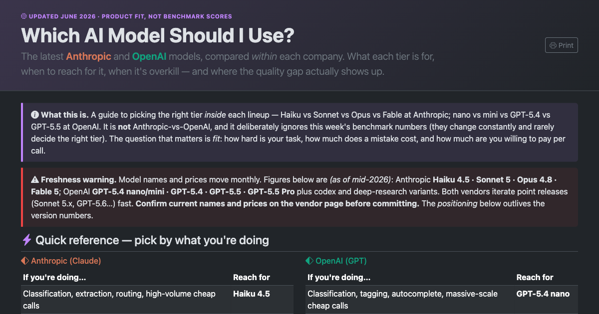
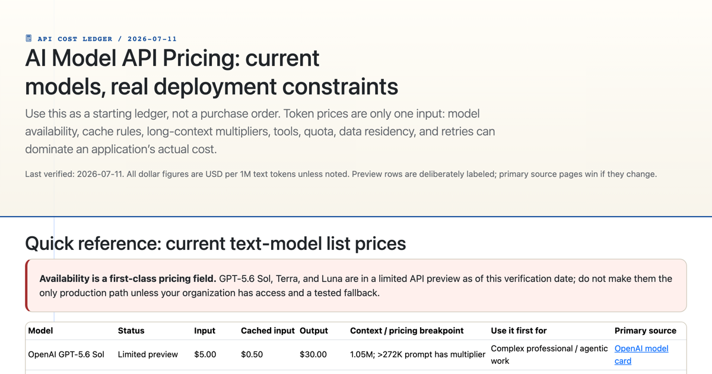
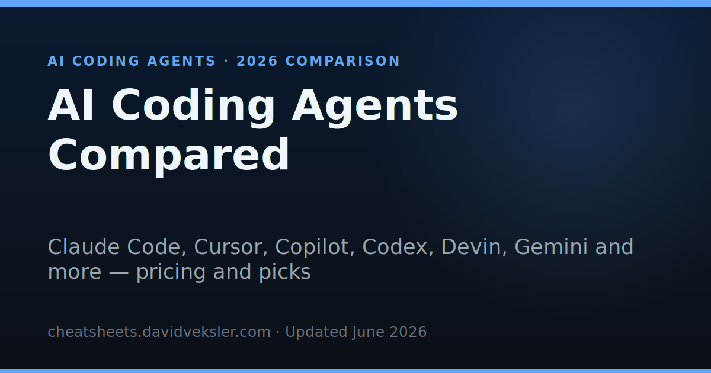
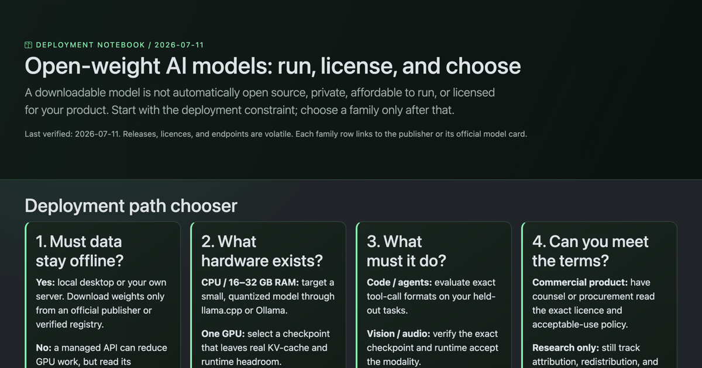
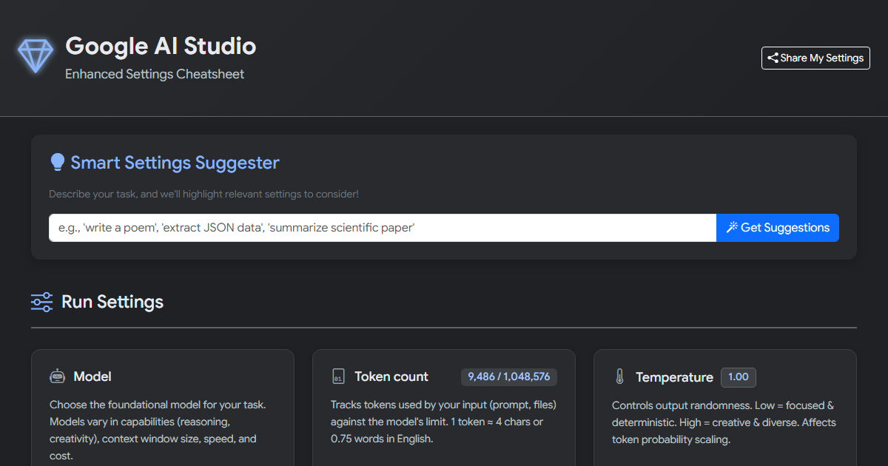
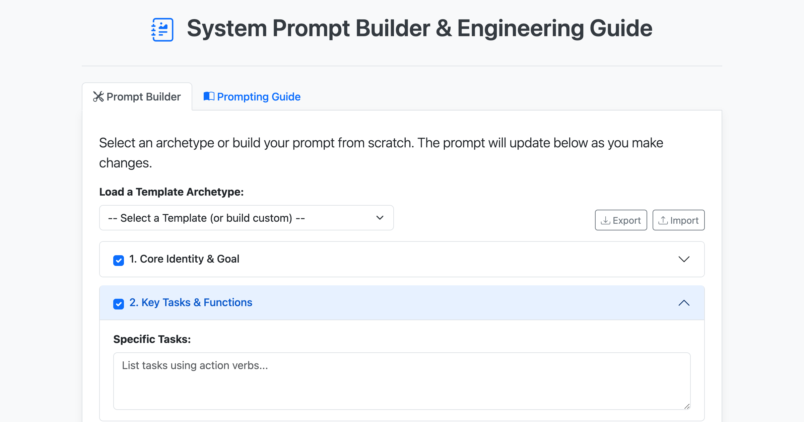
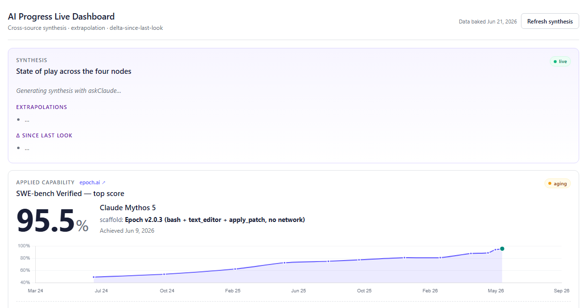

DecisionAnthropicOpenAI
Which AI Model Should I Use? Model Picker
Match Claude, GPT, and Gemini tiers to your task, latency budget, and cost ceiling — a straight decision guide, not a leaderboard.
Open guideStop guessing. Start from what you're actually trying to do — ship a product, cut API cost, pick a coding agent, run models locally — and this hub routes you to the deep-dive that answers it. This is the "which tool" layer, not another list of labs.
There is no single "best AI model" — the right answer depends on the job, the budget, and whether you need to own the weights. Find your task, then open the guide that goes deep.
| Your task | What decides it | Go to |
|---|---|---|
| Pick a general model for a product or workflow | Capability tier vs latency vs cost; provider fit | Model Picker |
| Estimate or compare what the API will cost | Input/output token price, context size, cache pricing | API Pricing |
| Choose an AI coding agent or IDE assistant | Agent autonomy, editor integration, repo awareness | Coding Agents Compared |
| Run a model locally or self-host the weights | License, VRAM/size, quality vs a hosted frontier model | Open-Weight Models |
| Tune generation behaviour (temperature, top-p) | Sampling settings, determinism, output control | AI Studio Settings |
| Write a reliable system prompt | Role framing, constraints, structure, and testing | System Prompt Builder |
| Track how fast capabilities are moving | Live benchmarks and capability trend lines | AI Progress Dashboard |
Almost every "which model?" question reduces to a trade-off along these axes. Naming them makes the choice concrete.
A top-tier model is not always worth it. Match model strength to task difficulty, not to hype.
Price spans orders of magnitude across tiers. Prompt caching and output length often matter more than the sticker rate.
Hosted frontier models lead on quality; open weights win on control, privacy, and running offline.
A general chat model, a coding agent, and a locally tuned model are different tools for different jobs.
The full deep-dive references behind the decision table above.

Match Claude, GPT, and Gemini tiers to your task, latency budget, and cost ceiling — a straight decision guide, not a leaderboard.
Open guide
Input/output token pricing across GPT, Claude, and Gemini, with context limits and caching — work out the real bill before you commit.
Open guide
Claude Code, Cursor, Copilot and the rest — autonomy, editor fit, repo awareness, and where each coding agent actually earns its seat.
Open guide
gpt-oss, Qwen, Gemma, and Mistral: licenses, sizes, and how open weights stack up when you need control, privacy, or offline inference.
Open guide
What temperature, top-p, top-k, and the advanced knobs actually do — tune output determinism and creativity with intent.
Open guide
Build and stress-test a system prompt: role framing, hard constraints, structure, and the failure modes to check before you ship it.
Open guide
A live read on where model capability is heading, so your "which model" choice keeps up with a fast-moving frontier.
Open guide